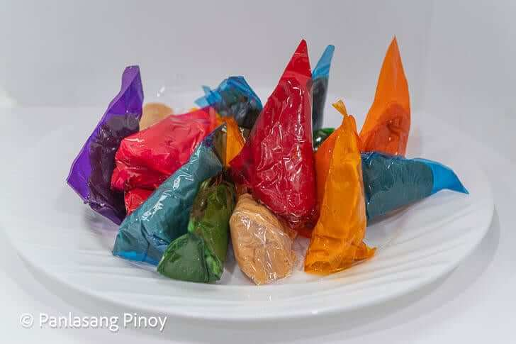

Yema

Ingredients
- 28 ounces condensed milk equivalent to 2 cans
- 3 tablespoons peanuts roasted
Instructions
- Chop the peanuts. Set aside.
- Pour condensed milk on a cooking pot. Let boil. Stir constantly while boiling for 10 minutes.
- Lower the heat. Add chopped peanuts. Continue cooking while stirring for another 10 minutes or until consistency becomes paste-like.
- Transfer yema mixture to a bowl.
- Start wrapping the yema candies individually on a pre-cut cellophane. (Note: The dimensions of my cellophane were 4x4 inches. You can decrease the dimension for smaller candies.)
- Let it cool down before eating. Share and enjoy!